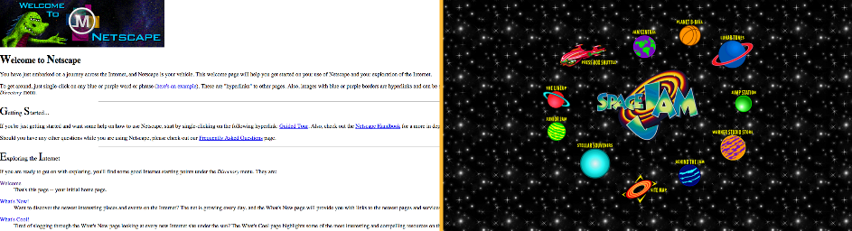
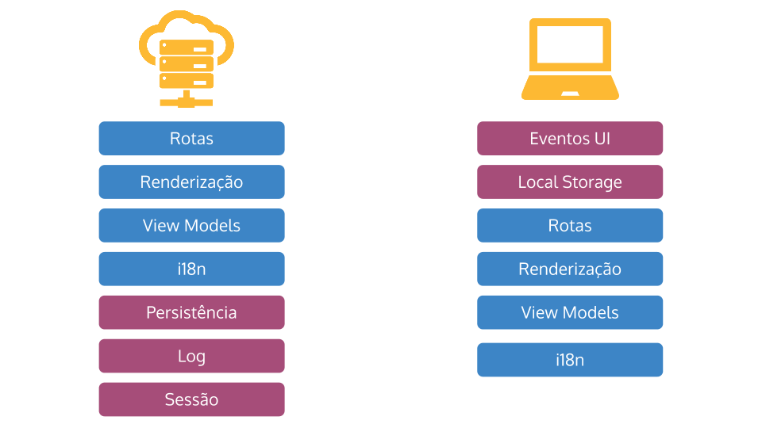
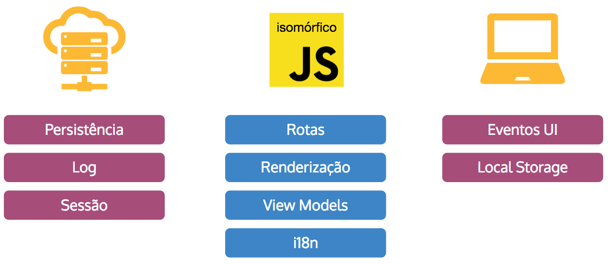
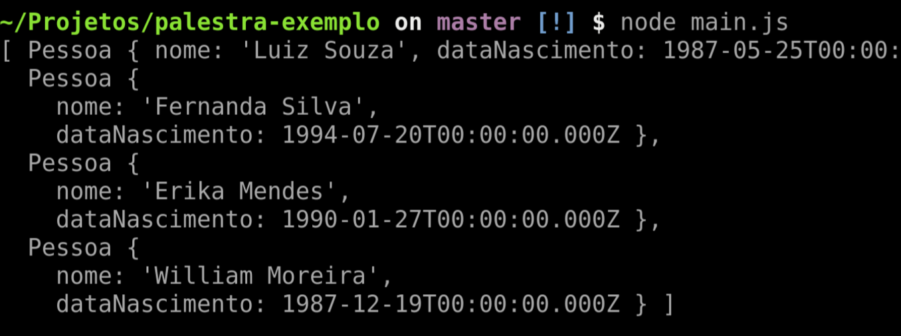
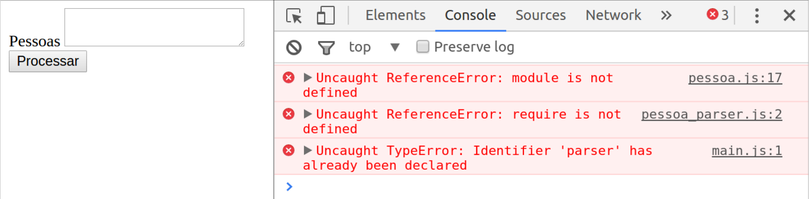
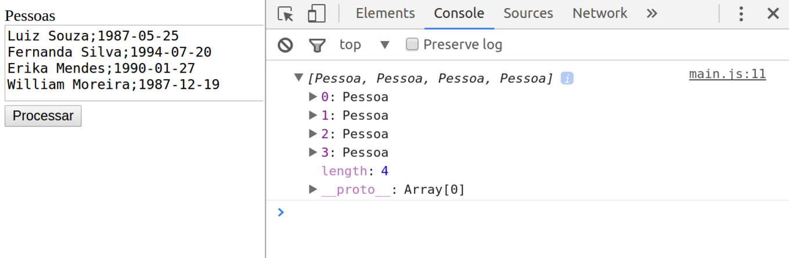

Javascript Isomórfico
Publicado em:
@fernandabernardo
Novos frameworks são criados a todo momento e um novo nome está criando mais força no mundo Javascript: isomorfismo. Farei uma série de posts para explicar melhor esse conceito e algumas aplicações dele com o uso de frameworks. Nesse primeiro post, será abordada uma parte mais teórica sobre o que é isomorfismo.
Voltando no tempo
Antes de falar de fato do isomorfismo, é interessante pensar em o que aconteceu na história para surgir a necessidade de utilizar um código Javascript isomórfico. No final de 1990, Tim Berners-Lee publicou uma proposta de gerenciamento de informações mais formal para a World Wide Web. Em 1993, lançaram o Mosaic, o primeiro navegador WWW, que rodava tanto em Windows quanto em Linux, a qual abriu a web para o público em geral. Nesse mesmo ano, já é possível observar as primeiras páginas estáticas, com muitos textos e imagens. Alguns desses sites antigos podem ser encontrados nesse artigo.

Já em maio de 1995, Brendan Eich criou o Javascript. Inicialmente conhecido como Mocha e mais tarde como LiveScript, o Javascript passou a ser conhecido com este nome apenas em dezembro, depois de receber uma licença da Sun. Essa mudança foi devido a uma jogada de marketing, já que o Java estava começando a ficar bem popular no mesmo período. Com o Javascript, foi possível adicionar mais interações com a página, eventos, animações...
No final dos anos 2000, as Single Page Applications (SPAs) se tornaram populares. Elas são um modelo de desenvolvimento de aplicações web e mobile. Desenvolver uma SPA significa dividir a responsabilidade com o cliente, ou seja, ter mais código rodando no cliente. Elas se assemelham mais a aplicativos desktop e com elas é possível interagir com uma página sem a necessidade de atualizá-la (reload). Como não é mais necessário o reload, é possível carregar dados assincronamente para que os usuários possam fazer algo durante o primeiro carregamento da página. Temos vários exemplos de SPA (Facebook, Google Drive, Twitter, FourSquare), onde podemos realizar diversas tarefas sem ter que aguardar cada uma delas ser concluída. Um bom exemplo é o Gmail, no qual podemos enviar diversos emails em paralelo sem ter que aguardar o primeiro processo encerrar com sucesso.
Problemas atuais
Alguns problemas encontrados são com questões de Search Engine Optimization (SEO), já que, por padrão, não é possível rodar uma página dessas sem Javascript, pois todo o seu código é gerado no cliente via JS. Porém, melhora a usabilidade do usuário, tornando uma página mais fluida.
Em 1997, o projeto do Rhino foi iniciado na Netscape. O objetivo dele estava ligado ao suporte de scripting dentro de aplicações Java, e não ao desenvolvimento de aplicações completas. Anos depois, em 2009, foi criado o NodeJS e com isso é possível rodar um código Javascript no lado do servidor.
Sendo possível rodar código Javascript no servidor e também no cliente, podemos nos fazer uma pergunta: E se fosse possível rodar um mesmo código Javascript no servidor e no cliente?
Nomenclatura
A palavra isomorfismo no dicionário tem alguns significados, mas o que mais se assemelha ao que queremos é:
2. miner fenômeno pelo qual duas ou mais substâncias de composição química diferente se apresentam com a mesma estrutura cristalina.
Outra nomenclatura conhecida é Javascript Universal. Esta surgiu com um post em 2015 do Michael Jackson (é verdade). Ele fez um pull request para o React colocando os significados das duas nomenclaturas. No post, um dos argumentos mais interessantes é que, quando falamos para uma pessoa sobre Javascript isomórfico, ninguém entende logo o que significa, mas, se falarmos Javascript Universal, todos entendem bem mais rápido sobre o que estamos falando. No post, usarei o termo isomórfico, mas é bom saber que as duas nomenclaturas são usadas hoje em dia.
Código isomórfico
Depois da parte teórica, a pergunta que surge é: como isso funciona no código? Basicamente, temos o mesmo código que consegue rodar no cliente e no servidor. Isso é possível, já que temos a seguinte separação entre os dois lados:

Como é possível perceber, alguns pontos são repetidos dos dois lados, e são esses os pontos que serão unificados em um código só isomórfico. O resto, como, por exemplo, a parte de persistência e de sessão, faz parte unicamente do lado servidor, enquanto eventos de DOM e o Local Storage faz parte do lado cliente.

Para exemplificar como fazer um código isomórfico e quais são as especificações do lado cliente e do servidor, segue o código abaixo, feito com EcmaScript 2015:
class Pessoa {
constructor(nome, dataNascimento) {
this.nome = nome;
this.dataNascimento = dataNascimento;
}
get idade() { ... }
get primeiroNome() { ... }
}
module.exports = Pessoa;
Esse arquivo é o modelo de uma pessoa, com nome e data de nascimento. Nesse modelo há dois métodos, que retornam, respectivamente, a idade e o primeiro nome. Apenas isso é importante saber no momento, toda a forma de como foi implementado é irrelevante para o exemplo. Já o próximo código é a parte mais importante, já que será nele que aplicaremos o isomorfismo.
Pessoa = require('./pessoa');
const parser = {
parse: function(txt) {
return txt.split('\n').map((linha) => {
let [nome, dataTxt] = linha.split(';');
return new Pessoa(nome, new Date(dataTxt));
});
}
};
module.exports = parser;
Nesse código, temos um parser para o arquivo, que separa cada linha do texto e quebra a linha em cada ; e, com o resultado disso, cria uma nova Pessoa. O importante desse código é perceber que não utilizamos nenhum módulo do Node nem manipulamos o document do browser.
Na primeira parte do nosso exemplo, vamos rodar todo esse código no Node, apenas no lado servidor. Para isso, criaremos mais um arquivo (main.js) para rodar todo o código criado.
const parser = require('./pessoa_parser');
const fs = require('fs');
fs.readFile('pessoas.txt', (err, content) => {
let pessoas = parser.parse(content.toString());
console.log(pessoas);
});
Dessa forma, quando rodamos esse arquivo no servidor, obtemos essa resposta:

Agora, como nosso objetivo é ter um código que rode no servidor e no cliente, precisamos criar um arquivo HTML para tentar rodar esse código que já criamos. Esse HTML ficaria parecido com o código a seguir:
<html>
<head></head>
<body>
<label>Pessoas
<textarea id='pessoas'></textarea>
</label>
<button id='processar'>Processar</button>
<script></script> <!-- Import dos scripts -->
</body>
</html>
Logo de início, se tentarmos abrir o arquivo em um browser, teremos esse erro:

Aqui, percebemos que o module e o require, que fazem parte da especificação do node, não funcionam no browser, apenas no servidor. Precisamos arrumar o nosso código para que ele consiga se adaptar nos diferentes ambientes. Porém, vale lembrar que não iremos alterar a função parser, já que esse é o código isomórfico. O lugar que vamos alterar será no main.js, como mostra o código a seguir:
if (typeof module === 'object') {
const parser = require('./pessoa_parser');
const fs = require('fs');
fs.readFile('pessoas.txt', (err, content) => { ... });
} else {
document.getElementById('processar').addEventListener('click', () => {
let pessoas = parser.parse(document.getElementById('pessoas').value);
console.log(pessoas);
});
}
Além disso, em todos os lugares que usarem o require ou o module, teremos que fazer o seguinte if:
if (typeof module === 'object') { ... }
Dessa forma, no servidor continuará funcionando normalmente e, no browser, passará a funcionar:

Agora temos um código isomórfico! (Nossa função parser :) ) Nesse repositório está o código completo do exemplo explicado. Finalizando, nesse post temos o que é o isomorfismo, toda a parte histórica e como funciona um código simples. No próximo post, falarei mais sobre frameworks e o que usar isomorfismo traz para seu projeto.